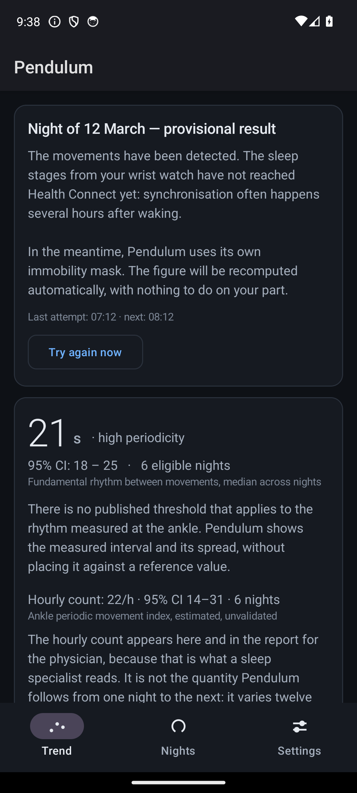
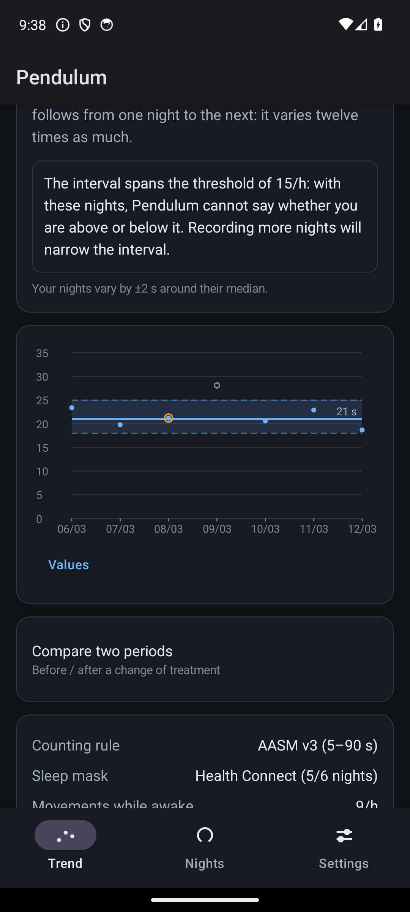
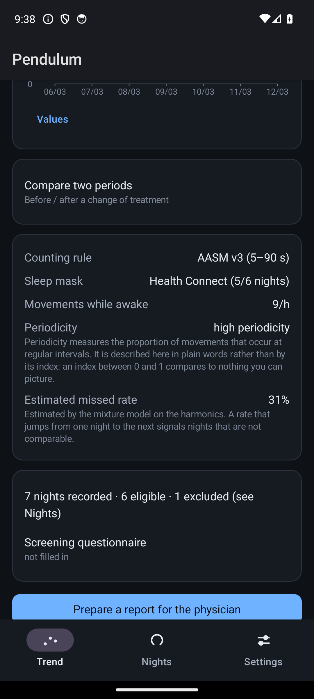
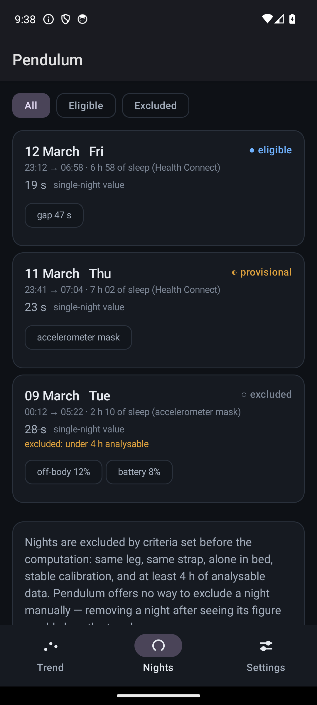
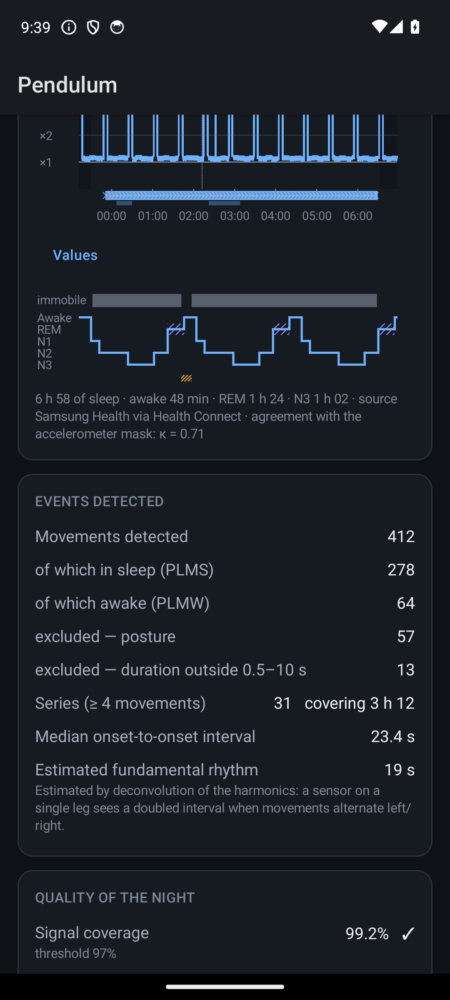
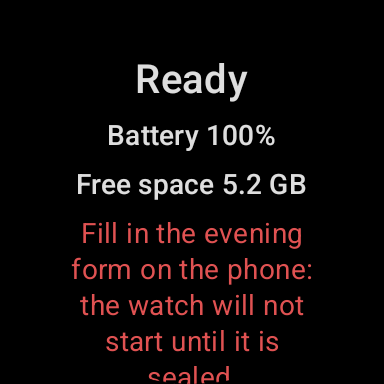

Open source · Android and Wear OS
Track leg movements in sleep.
Restless legs, measured at the ankle.
The amplitude decays. The period holds.
Pendulum records raw acceleration from a Wear OS watch worn at the ankle and reports whether your legs move periodically while you sleep — and how regular that rhythm is. It tracks the interval between movements, not their number.
What this is
A real measurement. The accelerometer readings are real, the processing chain follows published scoring rules, and the numbers mean something. Used over several nights, it can give you a well-founded reason to book an appointment — or a well-founded reason not to worry.
What this is not
Not a medical device, an official health application, or a diagnosis. Not reviewed or approved by any health authority, not affiliated with any medical body, and never validated against a sleep study. Its numbers are on a different scale from the ones a laboratory produces.
So Take the result to a physician. Do not take a treatment decision from it, and do not let a reassuring number stop you from seeing someone if you have symptoms.
Pre-alpha All four modules build; 195 unit tests on the two pure-JVM modules. No accelerometer has yet been worn at an ankle by this software.
It takes two devices, and that cannot be engineered away
The clinical index is movements per hour of sleep. If the movements and the sleep both come from the same accelerometer, the metric becomes circular: processing that suppresses movements lowers the numerator and, in the same gesture, raises the denominator. A treatment with no effect can then display as a clear improvement.
Ankle
A Wear OS watch
The only class of consumer device whose raw accelerometer a third-party app can read at 50 Hz for eight hours. Fitbit, Oura, Whoop and Garmin expose aggregated vendor metrics, never the sample stream.
Wrist, finger, or under the mattress
Any source that writes sleep to Health Connect
It provides the denominator, independently. Consumer wearables estimate total sleep time well and sleep stages poorly — and total sleep time is all the index needs.
An accelerometer does the work, not a gyroscope. A movement lasting 0.5 to 10 seconds is fully described by acceleration, and a gyroscope costs 3 to 40 times the current for nothing.
The thesis
Why the rhythm, and not the count
The clinical convention is the PLM index — movements per hour of sleep. Pendulum computes it and puts it in the report a physician would read, because that is the number a sleep specialist reads. It is not the number the application follows from one night to the next, for three reasons.
Stability
Night-to-night variability of the hourly count is 43.2 % ± 37.1; of the mean log inter-movement interval, 3.6 % ± 3.7. Twelve times less. Skeba et al., Sleep Med 2016, PMID 26847989
No denominator
The inter-movement interval and the periodicity index are computed from the movement onsets alone. The hourly count needs hours of sleep — and when that estimate comes from the same accelerometer that supplies the movements, the metric is circular and self-amplifying.
Scale
39 % of movements scored on EMG produce no detectable motion at an ankle-worn sensor. An accelerometric count is a different quantity, not a noisy estimate of the EMG one, so the 15/h clinical threshold does not transfer. Terrill et al., EMBC 2013, PMID 24111321
Interactive · move the slider
What a miss rate does to each quantity
Suppose the detector misses a fraction p of the movements, independently. The count falls in direct proportion. The rhythm does not: a missed movement merges two 21 s intervals into one 42 s interval, which is a harmonic of the fundamental, not noise. The information is displaced, not destroyed — and the mixture model that separates the harmonics recovers the fundamental and measures p at the same time.
Hourly count · collapses
25.2 /h
From a true 25.2 /h — the nominal synthetic night of the regression suite: 168 in-series movements over 400 min of analysable sleep.
Raw mean log interval · biased upward
21.0 s
Bias +0.000 nats · interval ×1.00. Published night-to-night variability is 0.11 nats at a 21 s interval.
Fundamental, deconvolved · holds
21.0 s
Recovered by the harmonic mixture model, together with an estimate of p itself — which doubles as a night-comparability check.
At a zero miss rate the two agree. Raise the slider and watch them separate.
Values are computed live from the published relations: E[ln N] = Σ pk−1(1−p)·ln k for the bias, and a proportional fall for the count. At p = 0.39 the bias is +0.357 nats, an interval multiplied by 1.43 — a true 21 s rhythm reads as 30.0 s. That is 3.3 times the night-to-night variability the whole method rests on, which is why deconvolution is not a refinement but the condition for the metric to exist.
Seven minutes of it
What the detector actually sees
The vertical axis is amplitude divided by that night's own noise floor, on a log₂ scale — which is what makes the ×8 onset threshold a straight horizontal line and the detector's logic readable at a glance. The envelope is drawn as minimum-to-maximum per pixel column and never averaged, which is why it looks like a picket fence rather than a smooth curve.
This signal is synthetic. No accelerometer has been worn at an ankle by this software. It is generated in the browser from the parameters of the worked example in docs/03-algorithm.md §7: a noise floor of 4.0 mg, an onset threshold at ×8 of it (32 mg) and an offset at ×2.5 (10 mg), movements 21 s apart with plateau amplitudes in the 45–150 mg range and durations between 1.7 and 3.3 s, and a gross-body threshold at ×40 of the effective floor. Four consecutive movements make a series; a movement above ×40 is excluded and imposes a 2 s refractory window on either side.
Raw acceleration to published indices
The processing chain
Nine stages, in order. Two edges are drawn dashed because they are the only places where the chain is not strictly feed-forward: posture boundaries cut the noise-floor windows, and detected movements are fed back into the sleep mask so that the mask does not read them as evidence of wakefulness.
Integrity
Eleven O(n) checks on data the on-wire CRC does not cover: rate, monotonicity, overlap, impossible jerk, saturation, gravity plausibility. Above 1 % of blocks rejected, the night is void.
Timeline
The sampling rate is re-estimated from the timestamps and the signal resampled to 50.000 Hz — a rate wrong by 5.2 % falsifies every duration by 5.2 %. Gaps are classified; the first 5 s of each segment leaves the denominator.
Gravity / movement split
Two parallel paths, not a subtraction: a 0.15 Hz low-pass gives the gravity vector ĝ as a first-class signal, a 0.5–8 Hz band-pass gives the movement channel. Stateful biquads, one pass per segment — restarting them per block injects a periodic artefact that looks exactly like a perfect movement series.
From ĝ · off-chain
Posture detector
A change of more than 20° over ±2 s, held within 10° for 10 s. A turn moves gravity by up to 1 g — fifty times a real movement — and rings for the exact duration that would be counted.
↓ cuts the floor windows · guards detection
Dual envelope
RMS over 0.50 s for the decision — long enough to null the ripple that fragments one movement into three — and RMS over 0.15 s for edges and the WASM morphology criterion.
Adaptive noise floor
p25 over a bilateral 120 s window, then mask everything above ×4, then the median of the survivors. The floor is mechanical, not thermal: it steps at every posture change, so windows never cross a boundary.
Thresholds
Θ_on = max(8·floor, 0.020 g, 0.12·gainCal), with the offset at 0.3125 of the same three terms. Which term dominates is recorded per sample: two nights in different regimes are not comparable.
Candidate detection
A state machine on the coarse envelope, edges refined on the fine one. Morphology, duration 0.5–10 s, gross body movement, posture guard, blind zones. Rejection reasons are exclusive; flags are cumulative.
Three layers · off-chain
Sleep mask
A sustained-inactivity rule of the van Hees type — the only family showing no significant wrist-versus-ankle difference. Blind to periodic movements by construction, a bounded fixed point of exactly two iterations, then fused with Health Connect where it exists.
↓ supplies the denominator and its independence level
Series building
AASM v3 and WASM 2016 implemented literally and separately, never as one parameterised rule — the difference that matters is not the interval bound but whether a short interval breaks the sequence.
Indices
aPLM-i and aPLM-i/SPT, the Periodicity Index, and the fundamental rhythm μ by harmonic deconvolution — plus a publication gate that can refuse to emit a number at all. The rhythm and the periodicity index survive that refusal: they have no temporal denominator.
The published quantity is deliberately not called PLMI. It is called aPLM-i — ankle periodic limb movement index, estimated, not validated — in the code, the database and the export, because calling it PLMI would guarantee it is read as a laboratory PLMI.
Real screenshots, from emulators
The application
Every number on these screens was produced by the application's own preview dataset flowing through the real Compose code, and every chart was drawn by the same routines the production build uses. What they are not is a recorded night: the plotted signal is synthetic preview data. The screens are real; the night is not.






Not disclaimers added for form
What this cannot do
These are the reasons the output must not be read as a diagnosis. They are stated here rather than at the bottom of the page because three of them are properties of the sensor and its position, not defects to be fixed in a later version.
-
A leg sensor cannot diagnose restless legs syndrome
The diagnosis is clinical — five IRLSSG criteria based on waking symptoms. Periodic limb movements are a supporting criterion, nothing more.
-
The AASM recommends against actigraphy for this, strongly
As a replacement for EMG in diagnosing periodic limb movement disorder. This project does not dispute that recommendation. Smith et al., JCSM 2018
-
No respiratory channel
Respiratory-related leg movements cannot be excluded, because both published exclusion rules require a respiratory signal. In the presence of sleep apnoea the index is structurally overestimated. Periodicity does not rescue this: the movement interval mode is 22–26 s and the apnoeic cycle is typically 25–45 s, and respiratory-related movements are themselves periodic.
-
One leg only
Movements of the opposite leg are missed, biasing the count downward. This does not cancel the bias above — different subjects, different mechanisms, and their variances add.
-
A single night means nothing
In confirmed patients the 15/h threshold is exceeded on only about a third of individual nights. The interface refuses to draw a trend below three nights — by construction, not by warning.
-
Never validated against a sleep study
Nothing here has been checked against polysomnography, and there is no plan that would make that possible for an individual.
Where to go next
The code, the builds, the reasoning
The repository
Four Kotlin modules: the chunk format and the signal chain as pure JVM, the watch and phone applications on top. Source under AGPL v3, documentation under CC BY-NC-SA 4.0.
github.com/KonsomeJona/pendulum →
The latest release
Phone and watch, as APK for sideloading and AAB for the store, with SHA-256 sums. Take both halves from the same release: the Wearable Data Layer only exchanges between applications sharing an id and a signature, and the failure mode is silence.
releases/latest →
The documentation
Ten documents: the overview, the science, the algorithm stage by stage with its parameter tables and rejected alternatives, the architecture, the devices, the interface, the adversarial review, the screens, and the bibliography with the access status of every source.
docs/ →
Common questions
If you got here from a search
Why do my legs jerk or twitch while I sleep?
Involuntary leg movements during sleep are common, and when they recur at regular intervals — typically every 20 to 40 seconds, in runs — sleep physicians call them periodic limb movements. Most people who have them do not know: they happen during sleep, and a bed partner is usually the only witness. Pendulum measures whether yours follow that rhythm and how regular it is. What the rhythm means for you is a question for a physician.
Is there an app that tracks leg movements in sleep?
This one does, and it needs a smartwatch worn at the ankle rather than the wrist — that is where the movement is. It records raw acceleration all night at 50 Hz, then counts the movements and measures the interval between them. It is free, open source, and the whole processing chain is published so you can check what it does.
Can a smartwatch measure restless legs syndrome?
It can measure the leg movements associated with it, which is not the same thing. Restless legs syndrome is diagnosed clinically, from what you feel while awake — an urge to move, worse at rest, worse in the evening, relieved by movement. The night-time movements are a supporting sign, not the diagnosis. So a watch can give a physician a measurement they would otherwise have to take on trust, and it cannot replace the consultation.
My partner says I kick in my sleep. How can I know how often?
That is exactly the observation this was built around, and the honest answer is that one night tells you very little: in people whose disorder is confirmed, the count crosses the usual clinical threshold on only about a third of individual nights. Pendulum therefore refuses to show any trend before three eligible nights, and reports every figure with the uncertainty around it.
What is the difference between restless legs syndrome and PLMD?
Restless legs syndrome is about sensations while you are awake. Periodic limb movement disorder is about movements while you are asleep, and it is diagnosed when those movements disturb sleep and nothing else explains them. The two overlap — most people with restless legs also have the night-time movements — but they are separate diagnoses. Pendulum measures movement, so it only ever sees one half of that picture.
Does it need a subscription, an account, or an internet connection?
None of the three. The application declares no network permission at all, which means the operating system will not let it open a connection even if it tried — a property you can verify on the installed package rather than trust. There is no account, no analytics and no advertising. Your data leaves the device only through an export you trigger yourself.
Which watch do I need?
A Wear OS watch, worn at the ankle. It is the only class of consumer device whose raw accelerometer a third-party app can read all night — Fitbit, Oura, Whoop and Garmin expose processed vendor metrics instead. You also need a second source of sleep timing that writes to Health Connect, because one sensor cannot honestly measure both the movements and the sleep they happen in.